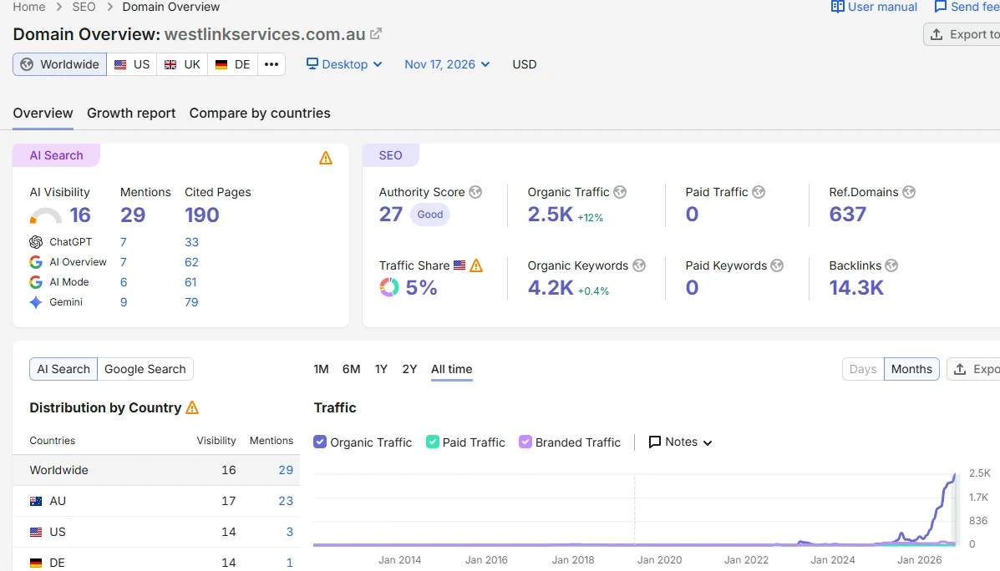
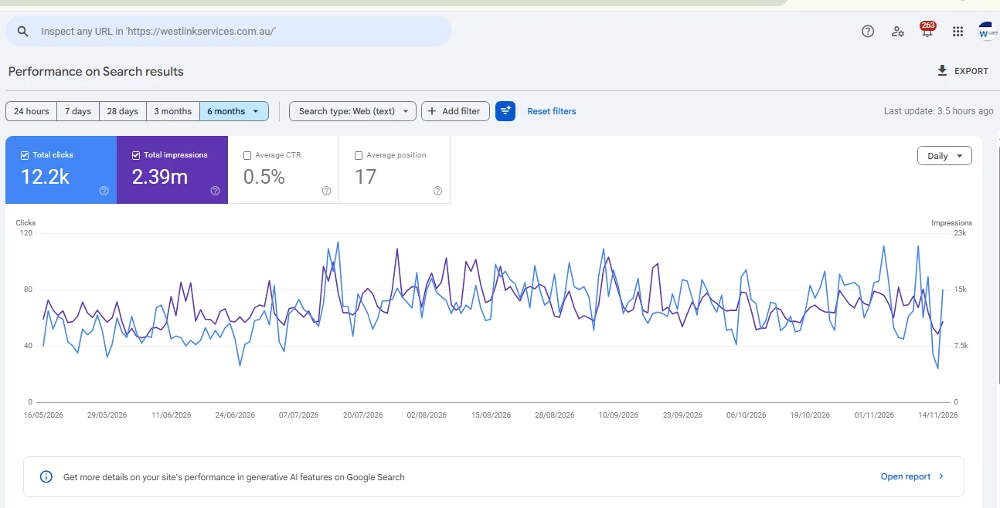
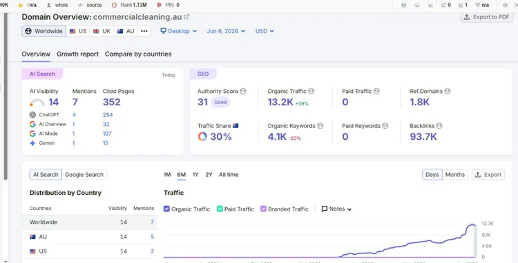
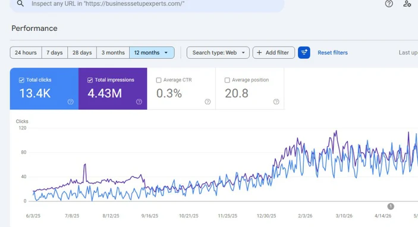
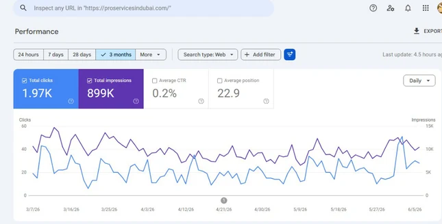
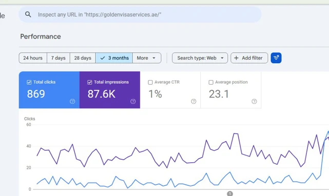

I make brands the answer, in Google and in AI search.
6+ years across the UAE, Australia, USA, India and Pakistan. Entity-first strategy, topic clusters and structured data that earn rankings, AI citations and qualified leads.
Every number below comes from Google Search Console or Semrush. Screenshots are the source.
LATEST · CURRENT ROLE
Westlink Services
Cleaning services · Australia · westlinkservices.com.au
As SEO Manager I lead organic growth across a 2,000+ page Australian service website and manage a team of 25+ digital marketers and SEO specialists. The focus is entity clarity, topic coverage and visibility in AI search engines as well as Google.
12.2KClicks, 6 months (Search Console)
2.39MImpressions, 6 months
2.5KMonthly organic traffic, +12%
4.2KOrganic keywords
637Referring domains
29AI search mentions

Semrush · Domain Overview · 17 Nov 2026

Google Search Console · 6 months · 16 May – 14 Nov 2026 · site-wide
Cleaning · Sydney, Australia · Jan – May 2026
Clean Group
13.2K
monthly organic visitors, +39% growth
Brand-new domain to Page 1 in 4 months. Topic cluster architecture, entity setup and LocalBusiness schema, plus visibility in ChatGPT, AI Overview and Gemini.

Semrush · commercialcleaning.au · 6 Jun 2026
90% more qualified leads · 1.8K referring domains · Core Web Vitals LCP 5.8s to 2.1s
Business setup · Dubai, UAE · Jan 2024 – Sep 2026
Business Setup Experts
4.43M
impressions in 12 months, 13.4K clicks
Page 1 for “Business Setup in Dubai” and “DMCC Business Setup”. Fixed duplicate content with canonicals and 301s, and added full LocalBusiness JSON-LD.

Google Search Console · businesssetupexperts.com · 12 months
200+ broken links fixed · mobile speed 38 to 74
Government services · Dubai, UAE · Oct 2024 – Sep 2026
PRO Services Dubai
899K
impressions in 3 months, 1.97K clicks
Page 1 for “PRO Services Dubai”, “PRO Services UAE” and “Dubai PRO Services” in a crowded government services niche.

Google Search Console · proservicesindubai.com · 3 months
Page 1 for PRO Services Dubai, PRO Services UAE and Dubai PRO Services
Visa consultancy · Dubai, UAE · 2025 – Sep 2026
Golden Visa Services
87.6K
impressions in the first 3 months, 869 clicks
Built from scratch in a highly competitive UAE niche: technical foundation, local entity structure and content architecture.

Google Search Console · goldenvisaservices.ae · 3 months
New site · built from scratch · first 3 months of data
Company formation · Dubai, UAE · Nov 2024 – Jun 2025
COFOCSP
3.3K
monthly organic visitors
Grew a company formation consultancy in the Dubai market with a strong keyword footprint and an authority-building backlink programme.
Page 1 rankings for Arabian Expedition (“Dune Buggy Dubai”), 800 Motor Guru (“Engine Repair Dubai”) and Fitbar (“Keto Meal Plan Dubai”), plus high-volume gaming and download portals.